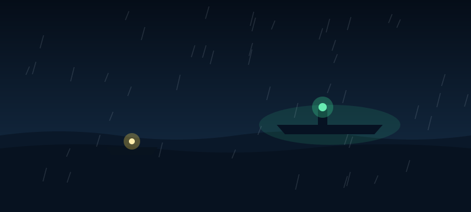

The Final Signal

You have one chance left to get somebody's attention, and your hands are shaking too much to waste it. Two lights are out there in the dark now. One is the little fishing boat, close in, still drifting towards the reef. The other is much bigger and much further out: the shape of an old steamer, glowing faintly green, with a single lamp burning at the top of its mast. It is exactly the ship from the sketch.